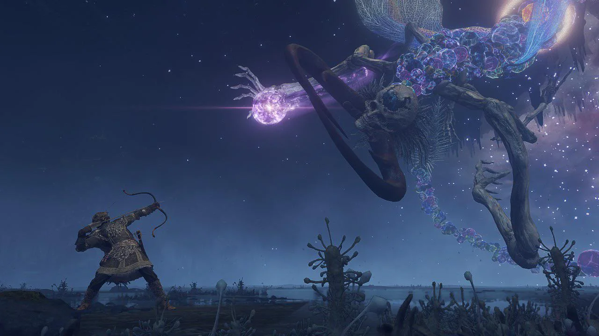

Rise, Tarnished
The story of Elden Ring revolves around the mysterious Elden Ring, a powerful artifact that governed the natural order of the world. Once shattered, the Elden Ring caused the downfall of the land of the Lands Between and left it in a state of chaos. The Elden Ring’s shattering shattered the bond between the gods, kings, and the world’s creatures, ushering in an era of darkness and instability.
The main protagonist of the story is the Tarnished, a group of exiled warriors who have been called back to the Lands Between after the Elden Ring's shattering. Their purpose is to retrieve the fragments of the Elden Ring, defeat powerful bosses known as Shards of the Elden Ring, and restore the Elden Ring to its former power.
Throughout the journey, the Tarnished must explore vast landscapes, unravel the lore of the land, and make pivotal choices that affect the fate of the world. With every victory, the Tarnished moves closer to restoring the Elden Ring, but at a great cost.